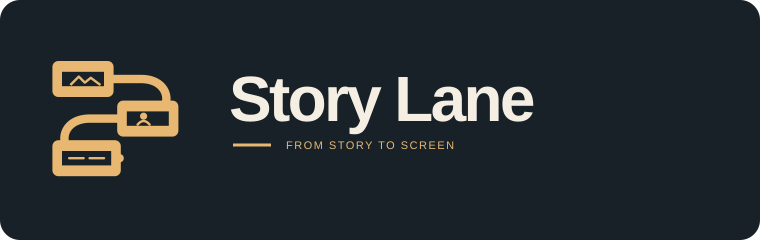
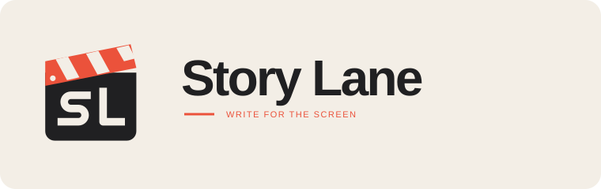
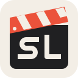
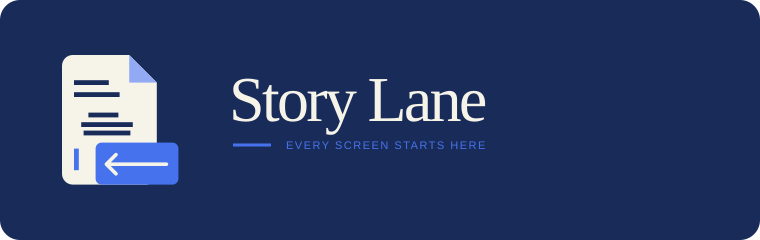
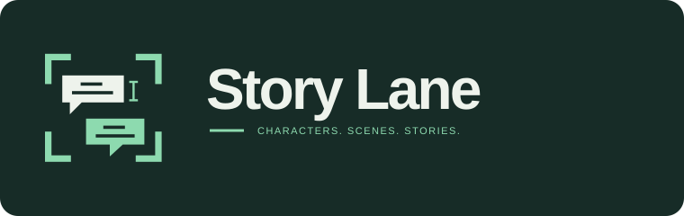

01
The Story Cut

Three widescreen frames connected by a continuous S-shaped lane. Story beats become screen sequences.
At app-icon sizes
Explore round two — six refinements of 01 and 04 →
Four distinct directions for a film and television writing app. Compare the full wordmark, then see how each symbol holds up at app-icon sizes.

Three widescreen frames connected by a continuous S-shaped lane. Story beats become screen sequences.

A custom SL monogram built into a production slate. Bold, compact, and immediately connected to film and television.

At app-icon sizes
A folded screenplay page with scene-heading and dialogue lines; the page opens into a widescreen frame.

Two screenplay dialogue blocks inside viewfinder corners. The open frame keeps the identity focused on the writer.